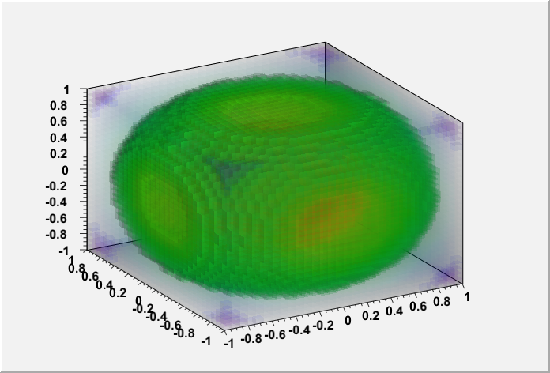
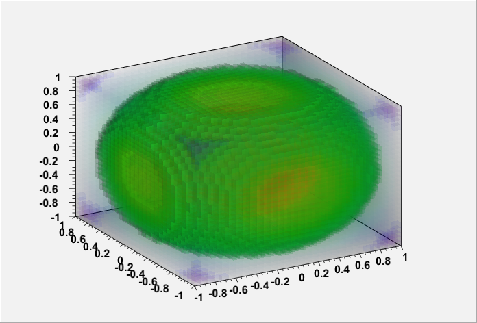

TH3 Painting
- The new option GLCOL allows to paint TH3 using semi-transparent
colored boxes.
 Image produced by $ROOTSYS/tutorials/gl/glvox1.C.

Image produced by $ROOTSYS/tutorials/gl/glvox2.C.
Image produced by $ROOTSYS/tutorials/gl/glvox1.C.

Image produced by $ROOTSYS/tutorials/gl/glvox2.C.
-
Fix the axis position and size when tree->Draw("x:y:z");
is displayed in the GL viewer.